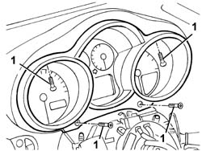
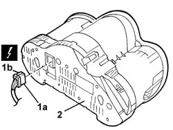

5560B11 analogue control panel - r+r or replace
- Path
- Procedures > 55 ELECTRICAL EQUIPMENT > 5560 INSTRUMENT PANEL > 5560B analogue control panel > 5560B11 analogue control panel - r+r or replace
- Kind
- repair procedure (removal / refitting; the operation number is the code)
- Applies to
- all engines; all production periods
- Interactive page
- https://sloeber94.github.io/elrnDB-a147/en/#/3025590
Applies to: all engines; all production periods
 Removing
Removing
 Refitting
RefittingLower the steering wheel and move it back to the end of travel position.
7040A26 steering column trim - r+r
4110A11 steering wheel - r+r for replacement or check for versions with air bag
1. Unscrew the bolts

Applies to: all engines; all production periods
1. Move the instrument panel slightly and disconnect the electrical connections (1a, 1b).
 | Name | Connector |
|---|---|---|
1a | Instrument panel |
| Name | Connector |
|---|---|---|
1b | Instrument panel |
2. Recover the control panel.

Applies to: all engines; all production periods
Refitting
RemovingCheck that the instrument panel is not damaged.
Connect the electrical connection
Refit the instrument panel and fix it using the bolt.
4110A11 steering wheel - r+r for replacement or check for versions with air bag
7040A26 steering column trim - r+r
Check the operation of the instrument and the functions controlled by it.
Topics linked from this page (5)
- 4110A11 steering wheel - r+r for replacement or check for versions with air bag
- 5580C18 air bag module - r+r
- 7040A26 steering column trim - r+r
- E50A Instrument panel ( Connectors )
- E50B Instrument panel ( Connectors )
Topics that link to this page (34)
- C32 TRANSMISSION WARNING LIGHT PERMANENTLY ON
- C34 DATA NOT INDICATED ON PANEL LCD AND TRANSMISSION LEVER PANEL LED LIT
- I30 LIGHTS CHECK NOT WORKING
- I80 HEADLAMP ALIGNMENT CORRECTOR NOT WORKING
- K01 REV COUNTER NOT WORKING
- K03 SPEEDOMETER NOT WORKING
- K05 MILOMETER NOT WORKING
- K10 DOORS OPEN CHECK NOT WORKING
- K15 CLOCK NOT WORKING
- K20 FUEL LEVEL GAUGE NOT WORKING
- K21 FUEL RESERVE WARNING LIGHT NOT WORKING
- K25 ENGINE COOLANT TEMPERATURE GAUGE NOT WORKING
- K26 ENGINE COOLANT OVERHEATING WARNING LIGHT NOT WORKING
- K30 MINIMUM ENGINE OIL PRESSURE WARNING LIGHT NOT WORKING
- K40 BATTERY CHARGING WARNING LIGHT NOT WORKING
- K90 INSTRUMENT LIGHTS / NOT WORKING
- K91 INSTRUMENT LIGHTS / LIGHTING DIMMER NOT WORKING
- K95 WARNING LIGHT SYMBOLS DO NOT COME ON / (IN INSTRUMENT PANEL)
- R03 PASSENGER AIR BAG DISABLED WARNING LIGHT
- S61 DASHBOARD CREAKING
- 3330D11 brake servo - r r including seperation from master cylinder - facia lining removed for rhd version
- 5020L10 additional heater system boiler - r r
- 5040A80 expansion/connection pipe - r r
- 5040B30 expansion valve (tube orifice) - r+r
- 5040C10 air conditioner box - r+r
- 5040C50 air conditioner heater radiator - r+r
- 5040C64 a/c evaporator - r+r
- 5040D76 air contitioner distribution flap control motor - r r
- 5040D84 air conditioner left hand air mixer flap control motor - r r
- 5040D86 air conditioner right hand air mixer flap control motor - r r
- 5040D90 air conditioner system wiring bundle - r r
- 5505C34 intergrated instrument under facia front air bag wiring - r r
- 7040A10 instrument facia trim - r+r
- 7040A97 facia trim support beam - r r